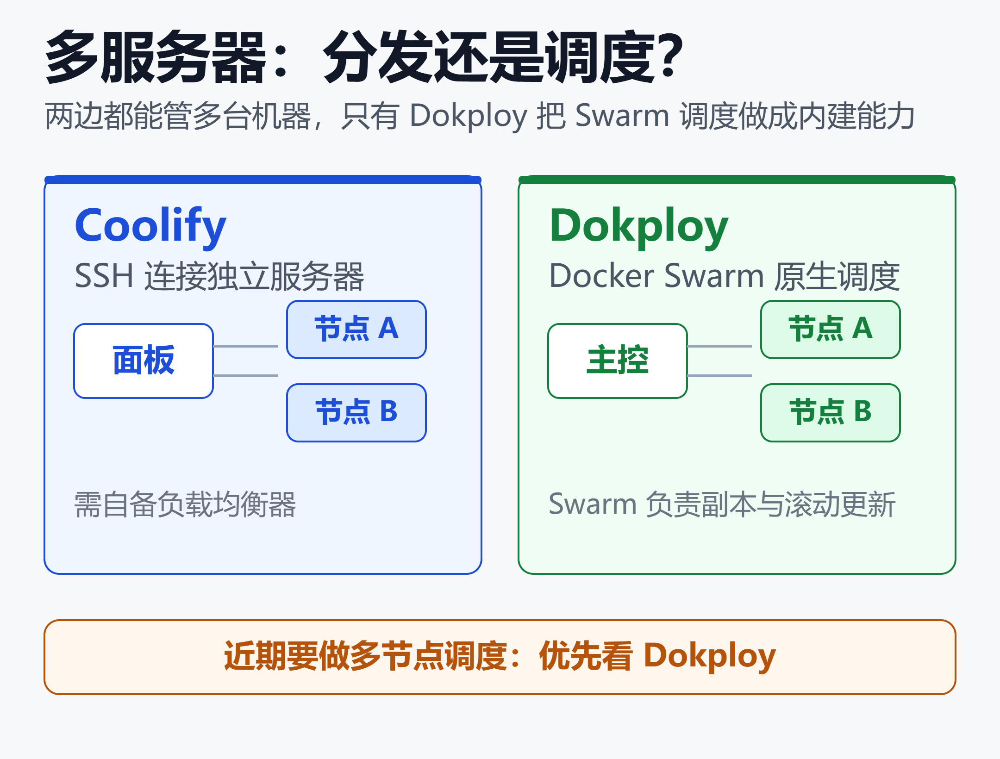
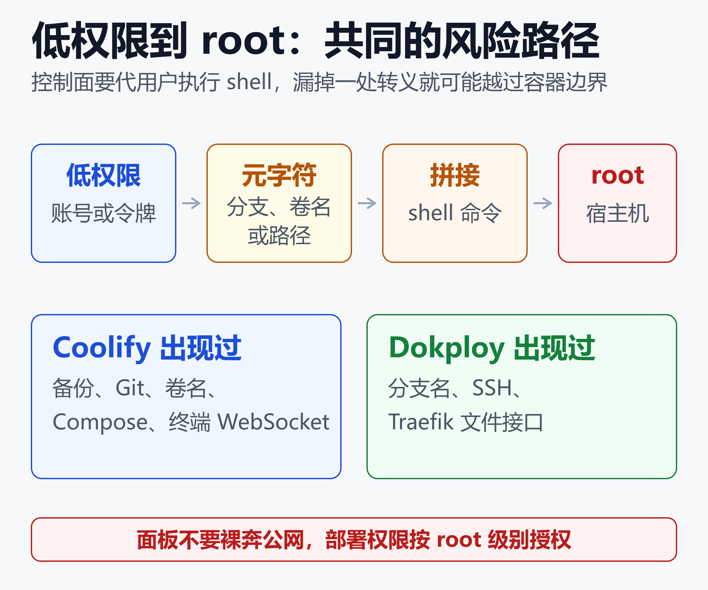

Coolify 还是 Dokploy？两大自托管 PaaS 的内存、功能与安全对比
65.5k 对 38.2k。
这是 Coolify 和 Dokploy 在 GitHub 上的 Star 数（2026 年 11 月初）。Dokploy 2024 年才发布，用两年多追到了 Coolify 的近六成。
两者的装法几乎一样：一条命令，几分钟后得到一个能 Git 推送部署、自动签发 HTTPS 证书的面板。差别在内存占用、Compose 与多服务器的实现、许可证，还有安全记录。
安全这一项没有赢家。2026 年两个项目都披露过「低权限账号拿到宿主机 root」的漏洞。选哪个之前，需要先弄清各自的代价。
先看底子：同一类产品，不同的出身
Coolify 和 Dokploy 都是自托管 PaaS。先在自己的服务器上装一个控制面，再由它通过 Docker 把应用、数据库和一键服务部署到一台或多台机器。
共同点很多：都用 Traefik 做反向代理并自动签发 HTTPS 证书，都支持 GitHub、GitLab、Bitbucket、Gitea 触发部署，都提供 API、CLI 和到 S3 的数据库备份。
安装也都是一条命令：
# Coolify
curl -fsSL \
https://cdn.coollabs.io/coolify/install.sh \
| bash
# Dokploy
curl -sSL https://dokploy.com/install.sh | bash
Coolify 的 README 提示可以先审阅安装脚本再运行。对生产服务器，两个脚本都值得先读一遍。
两个项目的底子并不相同（GitHub 数据，2026 年 11 月初）：
| 项目 | Coolify | Dokploy |
|---|---|---|
| GitHub Star | 65.5k | 38.2k |
| Fork | 5.9k | 3.1k |
| 贡献者 | 700 | 393 |
| Release 数 | 722 | 178 |
| 最新版本 | v4.5.3 | v0.30.10 |
| 主要语言 | PHP（Laravel） | TypeScript |
Coolify 经过约两年 beta，2026 年 4 月 27 日才发布 v4.0.0 稳定版。Dokploy 至今仍是 0.x 版本线，接口与行为仍可能调整，核心由创始人 Mauricio Siu 主导。
维护力量上，Coolify 的贡献指南自称服务 40 万以上用户，却只有 2 名活跃维护者，并说明大功能和架构改动在 v4 上基本不接收。
对做 AI 应用的团队，这类平台最常见的用途，是一键部署 n8n、Supabase 之类的自托管工具。低代码平台本身的选型，可以参考 Dify vs Coze vs RAGFlow vs N8N vs FastGPT：2026年低代码AI平台深度对比。
内存与服务器：Dokploy 更轻，差距在小机器上才显眼
先看控制面自己吃多少资源。下表来自两家第三方机构各自的测量，方法不同，数字不能直接互比。
| 项目 | Coolify | Dokploy |
|---|---|---|
| 空载（MassiveGRID） | 500–700 MB | 350–450 MB |
| 空载（Cloudzy） | 0.5–1.2 GB | 300–400 MB |
| 官方最低内存 | 2 GB | 2 GB |
| 官方最低磁盘 | 10 GB | 30 GB |
两份数据方向一致：Dokploy 更省。
原因在平台自身的组件。Coolify 是 Laravel 应用，加 PostgreSQL、Redis、实时服务和代理，以普通 Docker 容器运行。Dokploy 是 Next.js 应用，加 PostgreSQL 和 Traefik，以 Docker Swarm 服务运行。
CPU 也有差距。Coolify 空载约占 5% 到 7%，Dokploy 在没有部署任务时低于 2%。
MassiveGRID 的判断是，官方写的 2GB 只是下限，真正有负载后两者都会吃紧。在 4GB 机器上，平台自身占用之后，应用可用内存约为 3.3GB 对 3.6GB。到 8GB 以上，这个差距基本可以忽略。
Coolify 文档给出的参考负载是 8GB 内存、4 核、150GB 磁盘，跑 3 个 Node.js 应用、4 个静态站和若干数据库。
由此可以认为，内存只在 2GB 到 4GB 的小机器上有决定意义。机器本来就在 8GB 以上时，选型不该由它决定。
功能差异集中在四处
两个项目的功能清单高度重叠，真正拉开距离的是下面四处。
Docker Compose：Coolify 先停后启
Coolify 支持 Docker Compose，但有一个限制：Compose 部署没有滚动更新，新版本启动前会先停掉全部旧容器。零停机只对 Dockerfile、Nixpacks 和单镜像部署有效。
Cloudzy 引用了 Coolify 维护者在 GitHub 讨论中的说法，称 Compose 的滚动更新放在 v5，v4 不会补上。该文发表于 2026 年 6 月，之后是否变化，需要以最新文档为准。
Coolify 的 Compose 层还会注入自己的辅助变量并改写网络，结构复杂的 docker-compose.yml 有时需要调整才能跑通。
Dokploy 的路线相反。LogRocket 的对照测试发现，现成的 docker-compose.yml 几乎不用改就能部署，对应用做 stop/start 也不会触发完整重建，Coolify 则会。这是 Cloudzy 转引的方向性观察，不是 Dokploy 官方的零停机承诺。
已有一套真正的 Compose 栈时，用 Coolify 需要拆分服务，或者接受每次发布的短暂中断。
多服务器：SSH 分发对 Swarm 调度
两个项目都能通过 SSH 管理多台服务器，并指定哪个应用跑在哪台机器上。区别在于有没有调度器。

Coolify 把同一个镜像部署到几台独立服务器，前面的负载均衡由用户自备。官方对比页说明，Compose 应用和带持久化存储的应用目前不能这样用。
Coolify 的 Docker Swarm 支持曾标为实验性，现已弃用，计划在 v5 移除，改用 Compose 副本和 Coolify 自己的扩展机制。官方对比页和贡献指南都没有给出 v5 的发布时间。
Dokploy 把 Swarm 做成内建模式：工作节点加入管理节点后，由 Swarm 调度副本并滚动更新，多节点之间的镜像经镜像仓库分发。
图里的分水岭是一句话：要不要调度器替你放置和重启容器。Cloudzy 的结论是，近期就要用集群的团队，Dokploy 风险更低。
模板、构建与权限
下表主要取自 Coolify 团队撰写的对比页。该页自己声明作者与 Coolify 有利益关系，Dokploy 一侧的内容宜与 Dokploy 文档交叉核对。
| 维度 | Coolify | Dokploy |
|---|---|---|
| 一键模板 | 363 个 | 总数未公布 |
| 数据库引擎 | 8 种 | 6 种 |
| PR 预览 | 四家 Git 平台 | 文档偏 GitHub |
| 成员权限 | 团队级三角色 | 可按人细分 |
| 反向代理 | Traefik / Caddy | Traefik |
| CPU 架构 | amd64 + arm64 | 文档标 amd64 |
模板库的数字有出入。Coolify 官方统计 2026 年 10 月 19 日为 363 个。Dokploy 官方文档没有公布总数，MassiveGRID 称其模板仓库有 500 多个。
构建方式上，两边都支持 Nixpacks、Railpack 和 Dockerfile。Dokploy 另有 Heroku、Paketo buildpack 和静态站模式，从 Heroku 迁来、想保留 buildpack 流程的团队更省事。
权限差别更实际。Coolify 的角色是团队级的 Owner、Admin、Member，其中 Member 只读，没有项目级权限。Dokploy 免费版就能给成员单独授权，包括创建删除项目、服务，访问 Docker、Traefik 和 API。自定义角色、SSO、SCIM 和审计日志属于企业版。
监控、备份与 AI 入口
监控方面，Coolify 免费版自带 Sentinel 代理，服务器和容器曲线直接显示在面板里。Dokploy 自托管版有容器指标和日志，并能外送到 Grafana、Datadog 等系统；完整的监控面板属于 Cloud 版。
备份方面，两者都能把数据库定时备份到 S3 兼容存储。Coolify 自 v4.3.0 起支持卷与目录备份。Dokploy 支持命名卷备份，并有实例级备份，可恢复到新服务器，这是它支持的迁移路径。
两者都不在客户端加密备份包。建议在存储桶一侧开启服务端加密，并限制凭据范围。
两个项目也都有面向 AI Agent 的入口：Coolify 内置 /mcp 端点，使用团队级 API 令牌；Dokploy 提供官方 MCP 包。把令牌交给 Agent 之前，需要先读完后面的安全一节。
许可证与成本：一个全开源，一个开源核心加企业版
| 项目 | Coolify | Dokploy |
|---|---|---|
| 核心许可证 | Apache-2.0 | Apache-2.0 |
| 专有目录 | 无 | /proprietary |
| 付费功能 | 官方称无 | SSO、审计等 |
| 托管版起步价 | 5 美元/2 台 | 4.5 美元/台 |
Dokploy 在 2026 年 1 月 21 日调整了许可证。核心改为标准 Apache-2.0，同时新增 Dokploy Source Available License，用于 /proprietary 目录下的未来付费功能：源码可见，但生产使用需要商业协议。官方承诺不会把现有的开源功能挪进付费档。
文档列出的企业方向包括 SSO、SCIM、自定义角色、审计日志和白标。个人开发者和小团队自托管，功能上等同开源。需要这些企业能力的组织，最终会走向付费。
Coolify 全部是 Apache-2.0，自托管与 Cloud 功能相同，没有付费档。代价在项目的可持续性：资金来自赞助、Open Collective 和 Cloud，核心团队很小。
托管版只托管控制面，应用仍在自备的服务器上。Coolify Cloud 每月 5 美元含 2 台服务器，每多一台加 3 美元。Dokploy Cloud 的 Hobby 档每台服务器每月 4.5 美元，Startup 档每月 15 美元含 3 台。
不想自己维护控制面的团队，这是最直接的出路。但服务器的费用仍然另算。
安全：同一类设计，同一类漏洞
Coolify：三批问题
2026 年 1 月，The Hacker News 报道 Coolify 披露了 11 个严重漏洞，多个 CVSS 评分为 10.0。类型以命令注入为主：数据库备份、导入、PostgreSQL 初始化脚本、代理配置、文件挂载、Git 仓库字段都出现过。另有一个低权限用户读取 root 私钥的信息泄露（CVE-2025-64420）。
Censys 当时统计到约 52,890 台公网可见的 Coolify 主机。报道称尚无在野利用迹象。
之后又有新的 RCE 陆续公开。一份 GitHub 安全公告显示，团队里最低角色的成员，只要把卷名设成含 shell 元字符的字符串，命令就会以 root 身份在该实例管理的每台服务器上执行。
另一份公告指出，Coolify 会自动给命令加 sudo，所以任何一处命令注入最终都等价于 root。
2026 年 10 月公布的 PHP2Shell（CVE-2026-109618、CVE-2026-109619）则是 PHP 运行时本身的两个严重 RCE，影响所有 v4 版本。官方为每条 v4 分支发布了补丁版本，推荐升级到 v4.4.7，Cloud 版已由官方修补。
公告的补丁表只列到 v4.4.x。更新的 v4.5.x 是否同样包含修复，公告没有写明，升级前以官方页面为准。官方还提醒，Cloudflare 的 WAF 规则只是权宜之计，不能代替升级。
Dokploy：2026 年 8 月前后的一批
Cloudzy 在 6 月的对比里称 Dokploy 攻击面更小、严重漏洞的历史更短。这个判断在 8 月之后需要更新：SentinelOne 的漏洞库收录了至少 10 个 Dokploy 的 RCE 条目。
以 CVE-2026-72867（CVSS 9.9）为例。任何已登录用户先通过 compose.update 写入含 shell 元字符的分支名，之后触发 compose.deploy，分支名就被拼进 git clone 命令，在运行控制面的宿主机上执行。影响 0.29.3 至 0.29.12，0.29.13 用统一的 shell 转义函数修复。该问题源自对 CVE-2026-45628 的不完整修复。
另一份 GitHub 安全公告显示，readTraefikFile 接口只检查了目录穿越，没有拦截 shell 元字符，拥有 Traefik 文件读取权限的用户可以在受管服务器上执行命令。
需要注意，SentinelOne 的条目页自带「内容由 AI 生成，请以官方信息为准」的声明。上述细节应以对应的 GitHub 公告和修复提交为准。
Cloudzy 还提到，Dokploy v0.29.3 的发布说明也承认存在安全漏洞，并附带需要一并运行的补丁脚本。
PHP2Shell 针对 PHP 运行时，Dokploy 主体是 TypeScript，不在受影响之列。两个项目近期则都升级了 Node.js 安全版本 24.22.1。
共同的根因
两边的漏洞几乎是同一种形状：控制面要替用户在服务器上执行 shell 命令，每个能存进数据库的字符串，都可能被拼进命令。分支名、卷名、镜像名、路径、脚本文件名，只要某处漏掉转义，低权限账号就能一路走到 root。

这条路径上有四个环节：低权限账号、含元字符的字符串、被拼接的 shell 命令、以 root 执行的宿主机。图下方两张卡片列出的，是两个项目各自出现过的入口。
Coolify 的官方威胁模型也说明了这一点：有部署权限的用户自定义 install、build、start 命令属于预期行为，不算漏洞。部署权限本来就约等于服务器 root。
对权限设计的含义很直接：成员账号和 API 令牌，都应当按「能在服务器上执行命令」来授权，包括交给 AI Agent 的 MCP 令牌。
加固清单
无论选哪个，下面几条都适用：
- 面板不要直接暴露公网，放进内网、VPN 或 SSH 隧道。Coolify 官方公告把停掉容器或走 SSH 隧道，列为无法立即升级时的隔离办法
- 订阅两个项目的 Release 与安全公告，补丁发布当天升级
- 控制面与生产应用分机部署。Coolify 的 README 推荐一台服务器跑 Coolify，另外的服务器跑应用，面板出问题时不会同时带走应用
- 成员和令牌按最小权限授权，不把部署权限给不信任的人
- 升级后轮换部署密钥和 API 令牌，这是 SentinelOne 对 Dokploy 漏洞的缓解建议
- Coolify 遇到暂时无法修复的高危公告时，可以先执行
docker stop coolify。已部署的应用、数据库和服务会继续运行，只是暂时不能通过面板管理
部署出去的应用本身也要同步检查。依赖、镜像和 CI/CD 环节的防护，可以参考 企业 AI 供应链安全指南：数据、模型、依赖与 CI/CD 的防投毒清单。
怎么选：按场景对号入座
| 你的情况 | 倾向 | 原因 |
|---|---|---|
| 一键装 n8n 等工具 | Coolify | 模板库更大 |
| 树莓派、ARM 服务器 | Coolify | 官方支持 arm64 |
| 要纯 Apache-2.0 | Coolify | 没有付费档 |
| 要内置监控图表 | Coolify | Sentinel 免费 |
| 多节点调度 | Dokploy | Swarm 内建 |
| Compose 栈原样跑 | Dokploy | 少改写、少中断 |
| 按人细分权限 | Dokploy | 免费版可用 |
| 2–4GB 小机器 | Dokploy | 空载更轻 |
| 需要 SSO、审计 | Dokploy 企业版 | 需商业授权 |
如果只有一个应用跑在一台服务器上，两者都偏重。Cloudzy 建议先试 Kamal、Dokku，或者 GitHub Actions 加 Docker Compose。
选定之后若要换，两者之间没有自动迁移。做法是在新面板里重建服务，指向同一个代码仓库，用备份工具搬数据库转储和卷，最后切 DNS，并让两台服务器并行运行到新的稳定为止。
小结
Coolify 和 Dokploy 是同一类工具的两种取舍。
Coolify 的优势是模板库、arm64、内置监控和纯 Apache-2.0。代价是内存更高、Compose 部署没有滚动更新，项目只有两名活跃维护者。
Dokploy 的优势是更轻、内建 Swarm、对 Compose 友好、免费版可按人授权。代价是仍在 0.x 版本线，企业功能走付费。
安全上两边没有更安全的一方。无论选哪个，面板不上公网、补丁当天升级、按「能在服务器上执行命令」授权，对风险的影响都比选型本身更大。
免责声明
本文为技术资料整理，不构成运维、安全或采购建议。数据截至 2026 年 11 月 2 日。Star 数、版本号、价格和漏洞状态变化很快，请以各项目官方页面为准。
内存与 CPU 数字来自第三方在各自环境下的测量，结果随服务器配置和负载而异。对比表中取自 Coolify 团队撰写页面的内容带有厂商立场。
参考来源
- GitHub —— coollabsio/coolify
- GitHub —— Dokploy/dokploy
- Coolify —— Coolify vs Dokploy（Coolify 团队撰写的对比页）
- Coolify —— Pricing
- Coolify 文档 —— PHP Security Advisory 2026 (PHP2Shell)
- GitHub —— Coolify CONTRIBUTING.md
- GitHub —— Coolify SECURITY_ADVISORY.md
- GitHub 安全公告 —— Coolify：Root RCE on Managed Servers
- GitHub 安全公告 —— Coolify：PostgreSQL Init Script Filename 命令注入
- The Hacker News —— Coolify Discloses 11 Critical Flaws Enabling Full Server Compromise
- Dokploy 博客 —— We are updating Dokploy's Open Source license
- GitHub 安全公告 —— Dokploy：settings.readTraefikFile 命令注入
- SentinelOne 漏洞库 —— CVE-2026-72867: Dokploy Platform RCE Vulnerability
- MassiveGRID —— Dokploy vs Coolify in 2026: Footprint, Features, Cloud Plans
- Cloudzy —— Coolify vs Dokploy: A Thorough Comparison for Self-Hosted PaaS on a VPS
- Deploynix（DEV）—— Self-Hosted PaaS Showdown 2026
相关阅读
- LiteLLM 深度调研：用一个开源网关统一 100+ 大模型的完整实战指南
- Langfuse实战：给AI Agent装上黑匣子——开源LLM可观测性平台完全指南
- 企业AI Agent部署实战：从0到1600个Agent的落地路径
- Vercel评测：为什么AI应用开发者都在用它？
推荐搭配装备
善其事，利其器。以下硬件能最大化你的AI体验👇
🔗 通过以上链接购买可支持本站持续运营 🙏